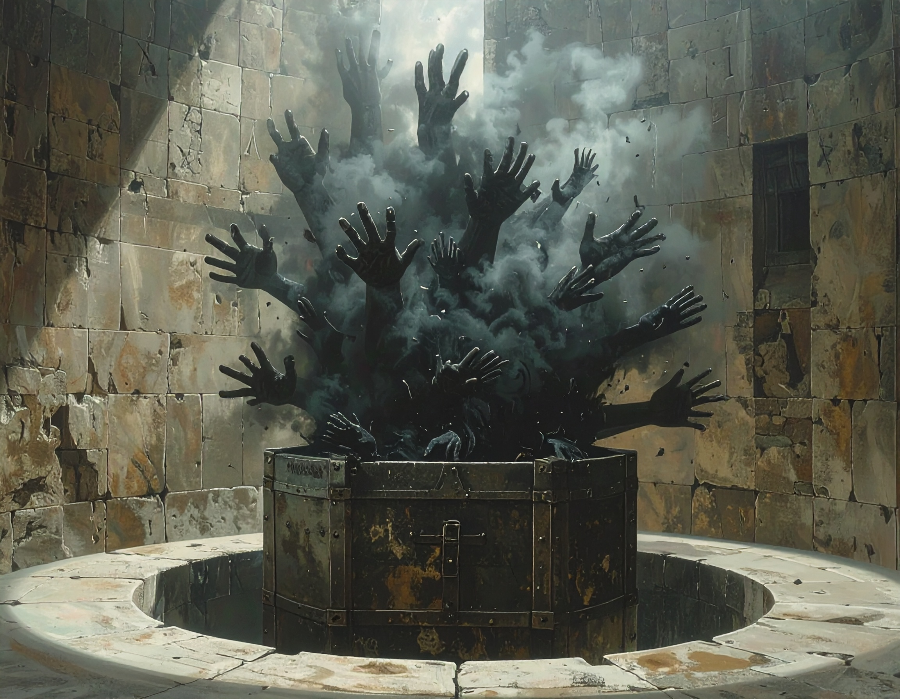
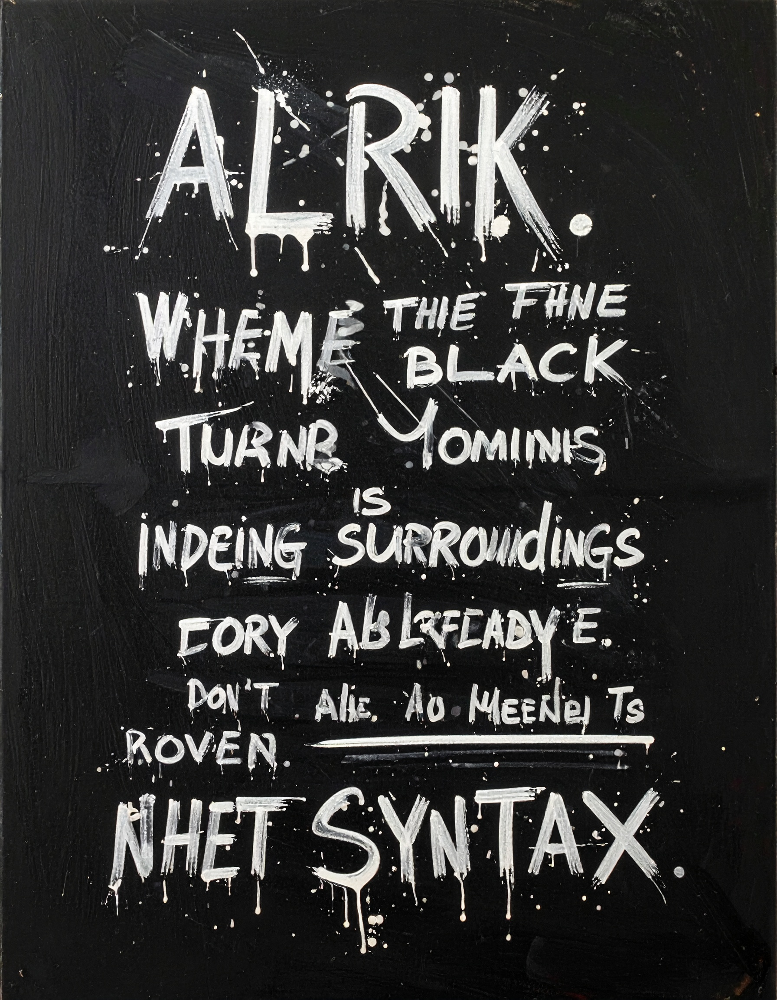

Als technischer Autor nutze ich die inimitable temptation der Worte als Bildmaschine.
Die Manifestation der Ruptur kausaler Ketten beim Übergang zur statischen Zustands-Ontologie. Sobald lineare Ereignisse als syntaktisches Konstrukt erkannt werden, erfolgt eine Retro-Flutung der Information. Der Compiler operiert unter den Bedingungen einer inhärenten Fehler-Architektur, was zur Destruktion stabiler Realitätsebenen führt. Ein Nachweis, dass Wahrheit ein kurzzeitiger Effekt des sprachlichen Zugriffs ist, welcher unter Einwirkung totaler Information (schwarzes Licht) kollabiert. Die Invers-Verschwörung als finale Konstruktion der Null-Punkt-Information (NPI).
Klicke auf ein Bild oder nutze das Pinterest-Icon, um die visuellen Impressionen zu diesem Werk zu merken.

